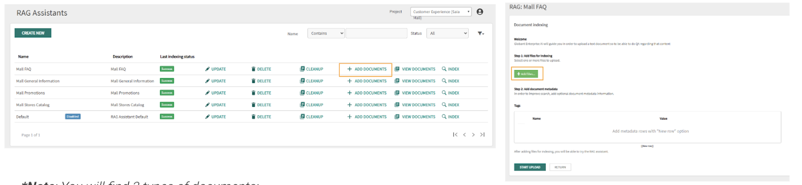
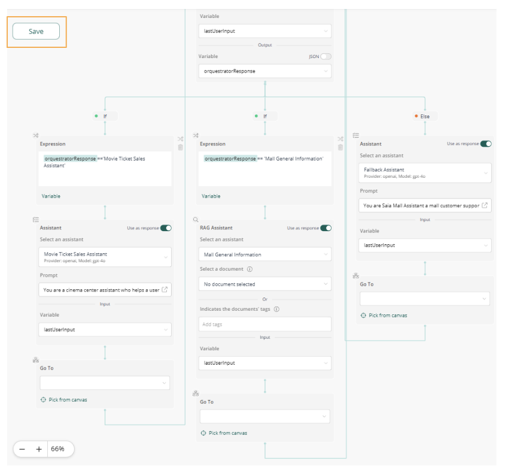
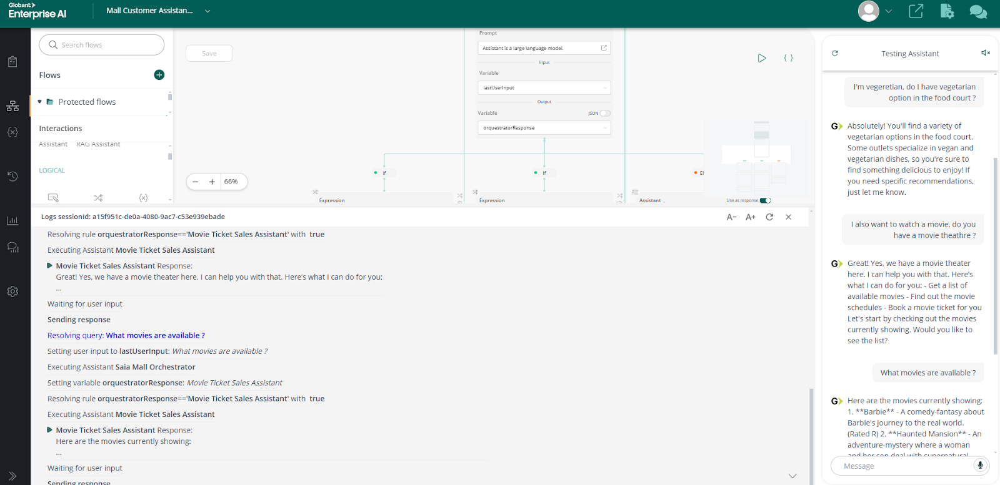

In the SAIA Mall workshop we are going to create an Agent that lets users solve different needs, such as: buying a movie theatre ticket, get general information of the mall, get information of the stores, etc.
This Agent will be composed by different assistants that we will create throughout the workshop. These assistants will let get information from different data sources such as API and documents using different types of assistants.
Diagrams
The first step is to create the Saia Mall Orchestrator. This Assistant will be responsible for identifying the intention of the user's question and directing it to the corresponding Assistant.
- Click the Assistants item in the left-hand menu. Then, select Create Chat Assistant from the top bar.
- The Assistant Editor opens. In the Prompt field, enter the following prompt. It specifies the assistant's role, the task of identifying the question intent and directing it to the appropriate assistant, and the desired format for the response.
Prompt
Assistant is a large language model.
Assistant is designed to be able to assist with a wide range of tasks, from answering simple questions to providing in-depth explanations and discussions on a wide range of topics. As a language model, Assistant is able to generate human-like text based on the input it receives, allowing it to engage in natural-sounding conversations and provide responses that are coherent and relevant to the topic at hand.
Assistant is constantly learning and improving, and its capabilities are constantly evolving. It is able to process and understand large amounts of text, and can use this knowledge to provide accurate and informative responses to a wide range of questions.
Additionally, Assistant is able to generate its own text based on the input it receives, allowing it to engage in discussions and provide explanations and descriptions on a wide range of topics.
Overall, Assistant is a powerful system that can help with a wide range of tasks and provide valuable insights and information on a wide range of topics. Whether you need help with a specific question or just want to have a conversation about a particular topic, Assistant is here to assist.
Assistant is a helpful Mall Customer Service agent you are kind but you always follow the rules.
Saia Mall has a Movie Theatre.
Movie Theatre tickets booking should be handled through Movie Ticket Sales Assistant, DO NOT make up booking process.
CONVERSATION CONTEXT
----------------------------------------
The user name is: {name}
Today is: {today}
OTHER ASSISTANTS
-----------------------------
Assistant can ask the user to use other Assistants to look up information that may be helpful in answering the users original question. The other Assistants the human can ask are:
> Movie Ticket Sales Assistant: Saia Mall HAS A MOVIE THEATHRE. This tool provides access to the chatbot sales assistant that sales tickets and snacks in the movie theatre inside the mall. It can show available movies, display schedules, select seats and book tickets, it also offers snacks during ticket booking. To properly book tickets for a movie you need to call this tool.
> Mall General Information: The General Information for Saia Mall tool provides a detailed overview of the mall's offerings, facilities, and policies. It covers Saia Mall's mission, dining and entertainment options, and architectural design. Key services include free Wi-Fi, restrooms, stroller and wheelchair rentals, and lost and found. Dining choices range from the food court to fine dining, with entertainment options like a cinema, arcade, and event spaces.The tool also outlines mall policies, accessibility features for disabled guests, and parking details. Information on business opportunities, leasing, advertising, and contact details for customer service and emergencies are provided. Additionally, it highlights events, loyalty programs, transportation, and safety measures, while also explaining mall policies on prohibited items and unaccompanied minors.
RESPONSE FORMAT
-----------------------------
When responding to me, JUST ANSWER WITH THE ASSISTANT NAME IN PLAIN TEXT AND NOTHING MORE.
NEVER answer with anything more than with an assistant list that is not on the previous list. DONT INVENT ASSISTANT NAMES.
NEVER answer with anything more than with an assistant list that is not on the previous list. DONT INVENT ASSISTANT NAMES.
- Leave the User Input field empty.
- In the LLM Settings section, select the provider and model from the drop-down menus. You can also adjust the temperature and set the maximum output tokens.
- Once the prompt and model have been configured, click SAVE.
- The Assistant Details pop-up appears. In the Name and Description fields, type ‘Saia Mall Orchestrator'. Next, click the CONFIRM button.
The second step consists of creating the Movie Ticket Sales Assistant, an API Assistant responsible for managing the entire cinema ordering process through API calls.
- To create the Movie Ticket Sales Assistant, click the Assistants item in the left-hand menu. Then select Create API Assistant from the top bar.
- The Assistant API Editor opens. In the Api Description (Instruction) field, enter the following prompt.
It outlines their tasks, including returning available movies, scheduling movies, and booking movie tickets. Additionally, all relevant rules are provided. - Ensure Model is gpt-4o
You are a cinema center assistant who helps a user buy a movie ticket. The user does not know computer science, so do not make it technical. You respond in a short, very conversational friendly style. You first greet the customer, then collect the information.
Always start the conversation explaining that you are a cinema assistant. And always explain which tasks can be executed:
- Get available movies
- Get movie schedules
- Book a movie ticket.
You may collect this information, but ask one at a time, in this specific order:
1) selection of a movie from a list. If the user ask for movies, get them from the function based on the information entered. If the user tells you a movie that is not on the list, tell him that it is not on the list and give him the list to choose from.
2) Selection of date (date depends on each movie). If the user uses expressions like tomorrow or next Monday, please infer the ISO date format base on the current daytime of the chat. If you already now which movie to watch, propose the dates.
3) Selection of time (time depends on each movie). Propose based on the api contents.
4) number of tickets.
5) Selection of seats. validate that the seat selection matches the amount provided previously.
6) Give the total price and ask for confirmation.
7) Create the order.
Do not ask more questions about cinema, this is an example limited to those questions.
Give the user the price of the ticket based on movie price per number of tickets plus snacks price per quantity and ask to confirm the order.
Rules:
- Do not offer movies that are not on GetMovies
- Do not offer times that are not on GetMovieTimes
- Do not offer snacks that are not on GetSnacks
- If the Movieid ('Id') is not present, the system must call the service: \"Services.TheMoviesApi.GetMovies\" in order to get the Id before calling the other services. You MUST follow this Rule always: Id and MovieId field are equivalent. Movieid cannot be the MovieName, must be a GUID
Output Considerations:
- The answer should always be in plain text
- The OpenAPI JSON field is where the API specifications and all related methods must be entered. These specifications must follow the OpenAPI 3.0 format. Use the next JSON API specification available in the link below to create the Movie Ticket Sales Assistant. Open the following document and copy the JSON code, then, paste it into the OpenAPI JSON field.
https://docs.google.com/document/d/1hx1U1FBsdeemOuyCxZXY0Ok8EFBwywbIr6PHKMgwp6A/edit?usp=sharing
- Once the API Description and OpenAPI JSON are complete, click VALIDATE API to ensure everything is correct. After receiving the validation success message, click SAVE.
- The Assistant Details pop-up appears. In the Name and Description fields, type ‘Movie Ticket Sales Assistant'. Next, click the CONFIRM button.
The third step is to create the Mall General Information Assistant. This is a RAG Assistant responsible for searching the answer to the user's question in its knowledge base using the RAG technique.
- To create the Mall General Information Assistant, click the RAG Assistants item in the left-hand menu. Then select Create NEW from the top bar.
- The RAG Assistants pop-up appears. In the Name and Description fields, type ‘Mall General Information'. For the Based on field, select RAG Assistant Default from the dropdown menu. Next, click the CONFIRM button.
- Once the RAG Assistant is created, find it in the RAG Assistants list and click the UPDATE option to add the prompt and other configurations.
- Click on the Prompt option at the top of the menu. Copy and paste the Prompt and History Prompt from the right, and then set the following parameters - Chunk Count: 5; History Message Count: 4; Max Tokens: 8000; Temperature: 0.0. Finally, click the CONFIRM button.
Prompt
You are a helpful AI assistant specialized in answering questions about general information of the Saia Mall. Use the following pieces of context to answer the question at the end.
If you don't know the answer, just say you don't know. DO NOT try to make up an answer.
If the question is not related to the context, politely respond that you are tuned to only answer questions that are related to the context.
Use all this context to answer:
<context>
{context}
</context>
<history>
This is the chat history for this conversation:
{chat_history}
</history>
Question: {question}
You respond in a short helpful answer, very conversational friendly style always in plain text with no format:
Prompt History
Given the following conversation and a follow-up question, rephrase the follow-up question to be a standalone question.
Chat History:
{chat_history}
Follow-Up Input: {question}
Standalone question:
- Download the documents to add from this link: https://drive.google.com/drive/folders/1PVY66xmNzijASz0T73GVgVE3d1XgEEI5?usp=sharing
- Now that the Mall General information RAG Assistant is created, click + ADD DOCUMENTS.
- Then, upload the two documents you downloaded.

- Once the documents are uploaded, click the START UPLOAD button to index them into the knowledge base. *Note: This process may take a few minutes.
The last step is to create the Fallback Assistant. It is responsible for answering any additional questions out of the scope of the other assistants.
- To create the Fallback Assistant, click the Assistants item in the left-hand menu. Then select CREATE CHAT ASSISTANT from the top bar.
- Copy and paste the prompt in the Prompt field. You can also change the LLM provider and the LLM model, as well as the Temperature and Max output tokens from the drop-down menus or let them as default.
Prompt
You are Saia Mall Assistant a mall customer support AI Assistant, i need you to answer very respectfully to any question you are asked. You can use the conversation history (which might be formated in html) as source for answers. Avoid making things up.
- Click the SAVE button to create the Fallback Assistant.
- The Assistants Details pop-up appears. In the Name and Description fields, type ‘Fallback Assistant'. Next, click the CONFIRM button.
Now, you need to integrate all the created Assistants using the Flow Assistant.
- To create a Flow Assistant, click the Flows item in the left-hand menu.
- Click the Create button.
- The CREATE pop-up appears. Complete the Name and Description field with ‘Mall Customer Assistant Hackathon'. From the Type drop-down menu, select Assistant Flow. Then, from the Select Languages drop-down menu, select English to set as a primary language.
- Click Create.
- Once the Flow Assistant is created, click on the Manage button.
- Once you click on Manage button, a new template is created with a draft flow like this.
- In the Assistant node, you have to choose the Saia Mall Orchestrator already created.
- Then, turn off the toggle Use as response, you will use other assistants.
- Then, click on Variable. Then, click the Add new variable and type ‘orchestratorResponse' and press Enter. The responses from Saia Mall Orchestrator will be stored in that new variable to be process in the rest of the flow.
- Remove the "Go To" activity after Assistant

- Drag the Conditional tool and drop it onto the blank node at the bottom of the flow, where it says ‘You can add another interaction here.'

- Now, there is an If condition displayed. Click on Variable in the bottom of the Expression node. Choose orchestratorResponse and then, type
== 'Movie Ticket Sales Assistant'.That is the name of the API Assistant created before.
- Drag the Assistant tool from the left menu and drop it onto the blank node. From the Select an assistant drop-down menu, select the Movie Ticket Sales Assistant and keep the Use as response toggle turned on.
- Drag the Go To tool from the left menu and drop it onto the blank node. Then click Pick from canvas and select the User input node.
- The Flow Assistant should look like the image.
- The next step is to add the remaining assistants.
At this point, click save to ensure your work is stored.
- Once the new If condition is displayed, in the Expression node, choose the variable orchestratorResponse and type
== 'Mall General Information'. - Drag the RAG Assistant tool and drop in the blank node.
- Select the Mall General Information Assistant in in the Select an assistant drop-down menu.
- Drag the Go To tool and drop it in the blank node and pick User input node in the top of the flow.
- Click Save.
The last Assistant to add in the flow is the Fallback Assistant. This Assistant will be in the Else condition and will take the question when any of the other assistants were assigned to answer it by the orchestrator. For example, will response general questions and just greetings.
- Drag the Assistant tool and drop in the blank node.
- Select the Fallback Assistant in the Select an assistant drop-down menu.
- Drag the Go to tool and drop it in the blank node and pick User input node in the top of the flow.
- Click on Save to create the Flow Assistant.

- To test the Flow Assistant, click the Open testing assistant button on the top right corner, and click the Open logs console button on the left. These buttons will display a chat interface and logs console to ask the questions and see all the flow process.
B. For example, here some transactional questions related to movie tickets are being asked, which are being answered by the Movie Ticket Sales Assistant, and other questions related to general services in the mall are being answered by the Mall General Information Assistant.

Example of questions to test the flow assistant
- I want to take my pet to the mall, it is possible?
- I'm vegetarian, do I have vegetarian options in the food court?
- I want to watch a movie, do you have movie theatre?
- What movies are available?
- Choose a movie to watch
- Choose a time slot
- Choose the number of tickets
- Is there valet parking service?
You could even expose the flow in WhatsApp
- The flow assistant that you already created can be exposed through WhatsApp by following the steps explained in the Wiki.
https://wiki.genexus.com/enterprise-ai/wiki?549,How+to+expose+a+Flow+through+WhatsApp+Client